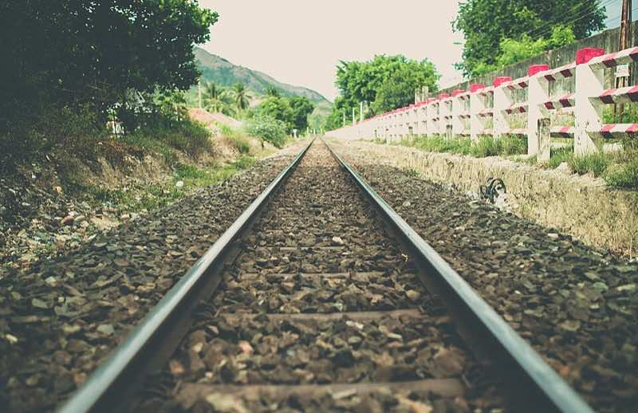

Route map
The red Valley Line and the blue Hill Line cross at Lanternvale Central. Change trains there to get anywhere.
- Pebbleford
- Mossbramble
- Lanternvale Central
- Kettlewhistle
- Hazelnook
- Muddlecombe
- Gingerbridge
- Lanternvale Central
- Fogmere
- Snailwick

Ride the Valley Line
From Mossbramble to Kettlewhistle the line runs dead straight between the fields. Going that way, sit on the left side of the train to see the river.
Trains on our lines go no faster than 60 kilometres an hour. That leaves plenty of time to wave at the cows.